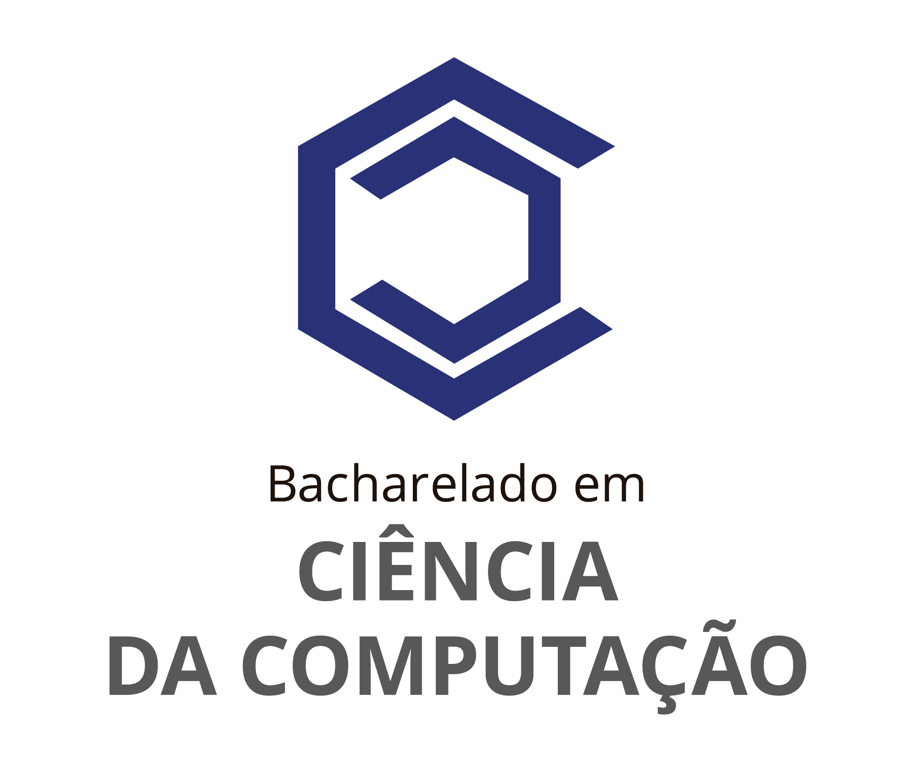
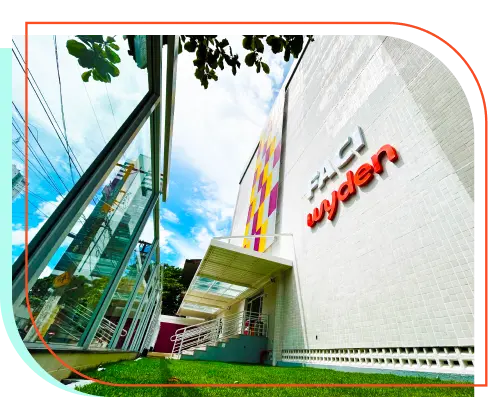
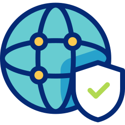
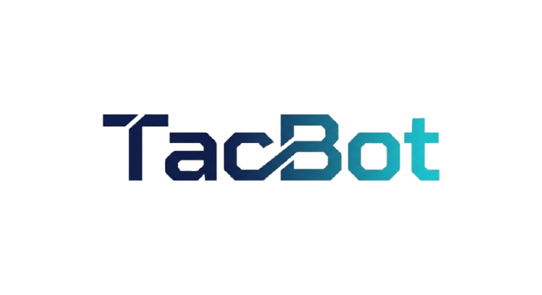
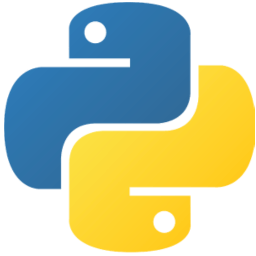
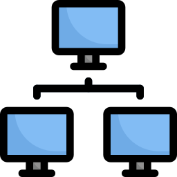
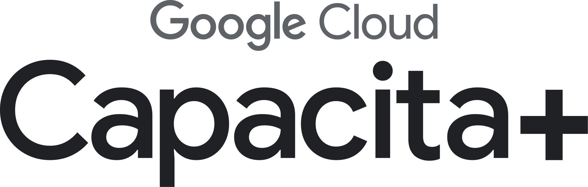
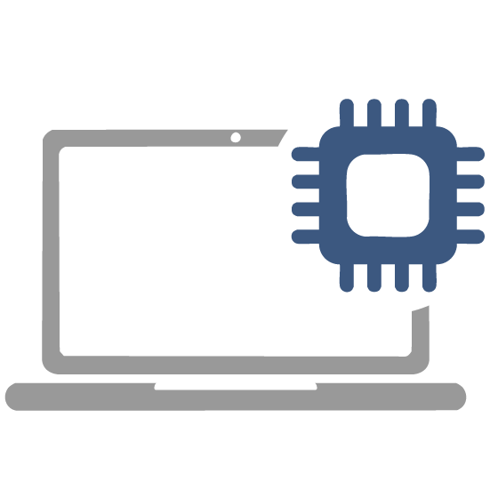

Sobre mim
Sou estudante de Ciência da Computação, interessado em tecnologia, Inteligência Artificial e Segurança da Informação. Tenho conhecimentos básicos em Python, JavaScript, Linux, redes e fundamentos de cybersecurity, além de interesse em desenvolvimento de software e pentesting. Busco constantemente aprender novas tecnologias e aplicar meus conhecimentos em projetos práticos, unindo desenvolvimento, segurança e criatividade.

Formação Acadêmica
Ciência da Computação Faci Wyden - Belém, PA - 2026 - Atualmente 2º semestre

Habilidades
Conhecimentos em Segurança da Informação e Cybersecurity, com foco em fundamentos de proteção, vulnerabilidades e boas práticas de segurança.
Conhecimentos em Pentesting, incluindo reconhecimento, análise de vulnerabilidades e fundamentos de testes de segurança.
Experiência com Linux e Kali Linux, utilizando ferramentas e recursos voltados para administração, redes e segurança.



Projetos
TacBot
Automação para WhatsApp com integração de Inteligência Artificial, processamento de mensagens, comandos e recursos multimídia.
Gerador de Senhas
Aplicação desenvolvida em Python para geração de senhas aleatórias, utilizando diferentes combinações de caracteres e opções de configuração.
Análise de Segurança de Rede Doméstica
Estudo sobre os riscos e vulnerabilidades de redes domésticas, com foco em identificar pontos fracos e implementar medidas de proteção.

Cursos e Certificações
Segurança da Informação Básica e Avançada
Solyd one - 2023-2024
Curso de Segurança da Informação e Cybersecurity, abordando tópicos como criptografia, análise de vulnerabilidades, ataques cibernéticos e melhores práticas de segurança.
Google Capacita+
Google Cloud - 2026
Capacitação prática sobre Inteligência Artificial, agentes de IA e o uso do Gemini para criação de soluções aplicadas a desafios reais.
Intensivo Segurança da Informação
Técnicas de Invasão - 2024
Capacitação prática em técnicas de invasão, reconhecimento, exploração de vulnerabilidades e fundamentos de testes de segurança.

Experiência Profissional
Manutenção e Suporte Técnico de Computadores - Autônomo
2025 - Atualmente
Prestação de serviços de manutenção, diagnóstico e suporte técnico em computadores, incluindo limpeza, identificação de problemas e instalação/configuração de componentes.
Idiomas
Português - Nativo
Inglês - Intermediário
Espanhol - Básico